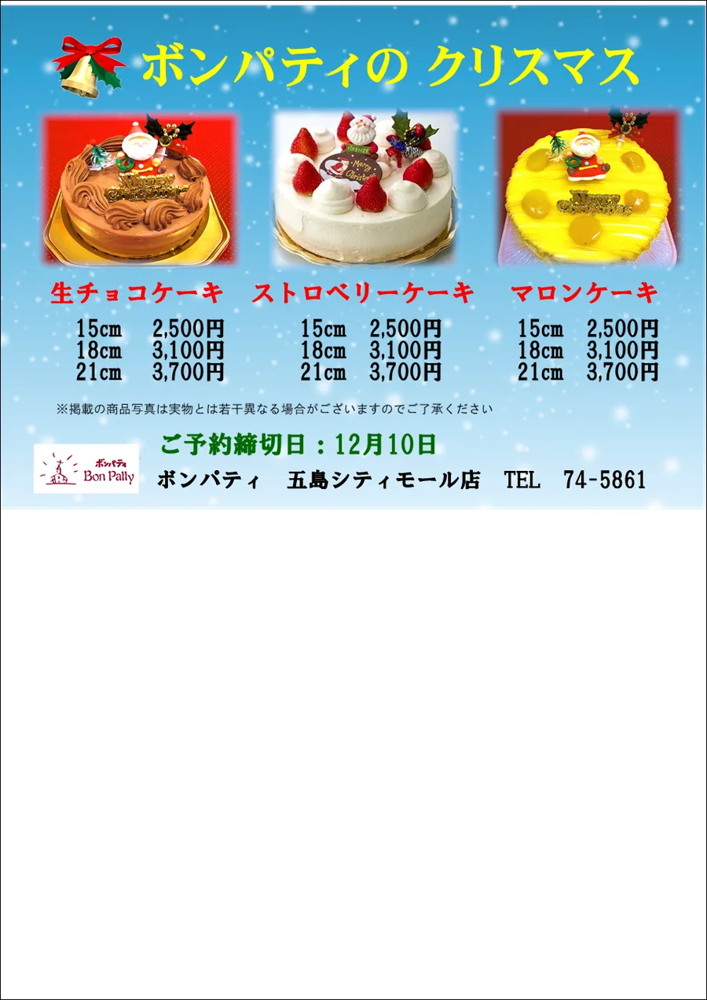

まず、流れは3つだけ
- 1スマホで材料を入れて送る写真と、伝えたいこと。写真がない時は「写真なし」も選べます
- 2案が2つ届く受付から2〜3営業日が目安。メールでお知らせします
- 3よい方に✓を付ける印刷用のPDFと、ホームページ用の画像をお渡しします
「1件」の数え方
次のどれか1つで、1件です。
- A4のチラシ（片面または両面）
- A3のポスター（片面）
- 同じ内容のチラシとポスターの組
見本：ボンパティ様のクリスマスケーキ
ボンパティ様からいただいた2025年のチラシを材料にして、箱から頼んだ場合の仕上がりを作りました（表と、裏の予約申込書）。

（2025年のチラシ）


（予約申込書）
値段は、いただいた資料の2026年の欄のとおりで、すべて税込の表示です。写真は、明るさ・色・背景・余白を整えてから使います（商品の形は変えません）。
使い方（画面の順に13の手順）
画面の番号（1〜10）の順に、上から入れていくだけです。画面の6〜9は、分かる所だけで大丈夫です。
専用のアドレスを開く
ひなが堂からお送りする専用のアドレスを押すと、箱が開きます。
合言葉やログインはいりません。上の「今月あと○回」が、その月にあと頼める件数です。
作る物と使い道を選ぶ（画面の1）
チラシ・ポスター・両方から1つ選び、どこで使うかに印を付けます。
何のお知らせか・どのお店かを選ぶ（画面の2・3）
いちばん近いものを1つ押して、お店を一覧から選びます。
館内全体の催しは、お店を「モール全体」にします。
写真を入れる（画面の4）
写真を選びます（4枚まで）。主役の写真に★を付けます。
写真がなければ「写真なし（文字と飾りで作る）」で大丈夫です。暗い写真も、できる範囲でこちらで整えます（使えない時はご相談します）。
いちばん伝えたいことを書く（画面の5）
ひと目で伝わる短い言葉を、20字までで書きます。
例：クリスマスケーキ ご予約承り中
商品と値段（画面の6）
商品の名前と値段を入れて、「税込」か「税抜」を選びます。
画面の6〜9は、分かる所だけで大丈夫です。
日にちと連絡先（画面の7）
催しや受付の日にちと、お客さまからの問い合わせ先を入れます。
見た目の雰囲気（画面の8）
近い雰囲気を選びます。迷ったら「おまかせ」で大丈夫です。
注意書き（画面の9）
「数に限りがあります」など、載せたい注意書きがあれば入れます。
受け取りたい日を選ぶ（画面の10）
案を受け取りたい日を選びます。
選べるのは、作るのに間に合う日からです。配る日・貼る日から逆算して、早めにお申し込みください。
3つの確認に印を付けて送る
3つに印を付けて「この材料で制作を頼む」を押します。
お店の了承・写っている人の了承・内容にまちがいがないこと、の3つです。

「受け付けました」が出たら完了
あとは待つだけです。案ができたらメールでお知らせします。
案A・案Bを見比べて、よい方に✓
「案を確認して✓」を押して、届いた案を見比べ、よい方に✓を付けます。
直してほしい時は、直してほしい所を書いて「この内容で頼む」を押します（3回まで）。直した案ができたら、またメールでお知らせします。✓のあとに、印刷用のPDFとホームページ用の画像をお渡しします。
こんな時は
- 写真がない
- 「写真なし」を選べば、文字と飾りで作ります。
- 急ぎで欲しい
- 送ったあと、LINEのグループで一言ください。間に合うかどうかをお答えします。
- 月4件を超えそう
- 送る前に、LINEのグループでご相談ください（お受けできない時もあります）。
- 入れまちがえて送った
- LINEのグループで一言ください。どう直すかをご案内します。
- 画面が手引きと違って、先に進めない
- LINEのグループで、画面の写真（スクリーンショット）を送ってください。
- アドレスを、人に送ってしまった・なくした
- すぐにひなが堂へ。新しいアドレスに替えます。
決まりごと
- 専用のアドレスは、その箱の鍵です。人に送ったり、貼り出したりしないでください。
- 「このスマホで次から開けるようにする」を押すと、次からアドレスなしで開けます。家族と共用のスマホ・パソコンでは押さないでください。
（今回だけ）お試しのお願い
下の見本の箱で、手順2〜13を実際に触ってみてください。見本は、入れた内容も写真もどこにも送られません。
見本の箱を開く見ていただきたい所
- 質問の順番と言葉が分かりやすいか（迷った所はどこか）
- テナント様から集める材料で、10の質問に答えられそうか
- 「月4件・1件の数え方」で足りそうか
- ボンパティ様の見本の仕上がり（直したい所があれば）
気になった所は、LINEのグループにそのままお書きください。